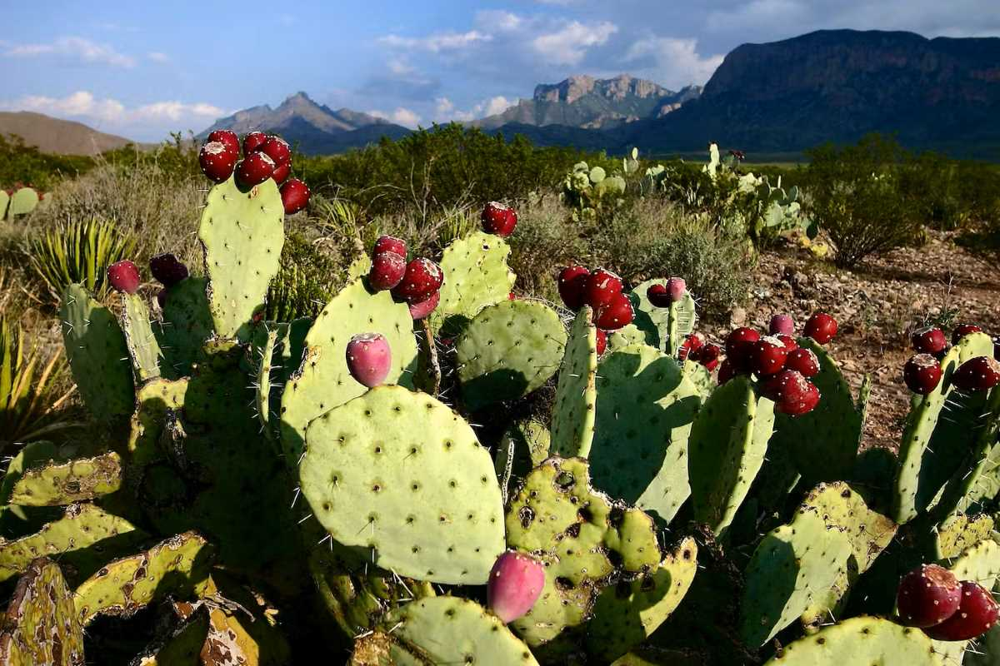
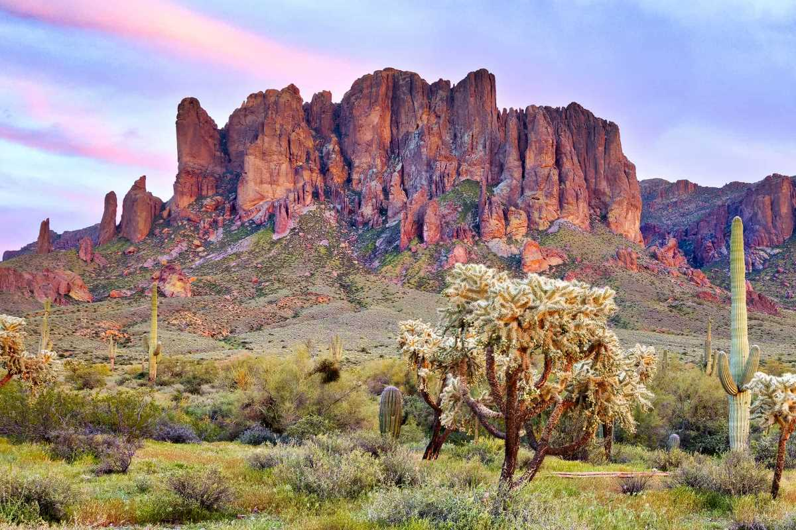
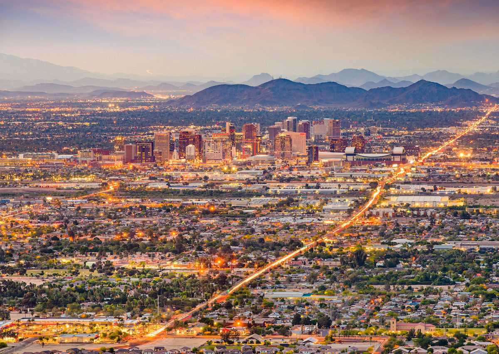
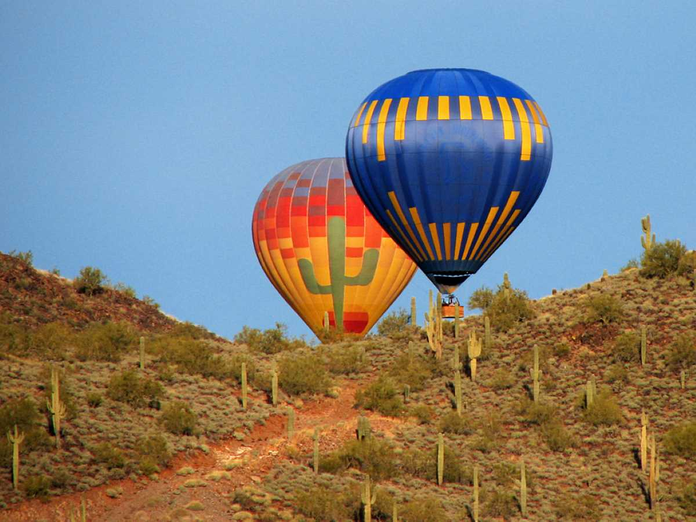
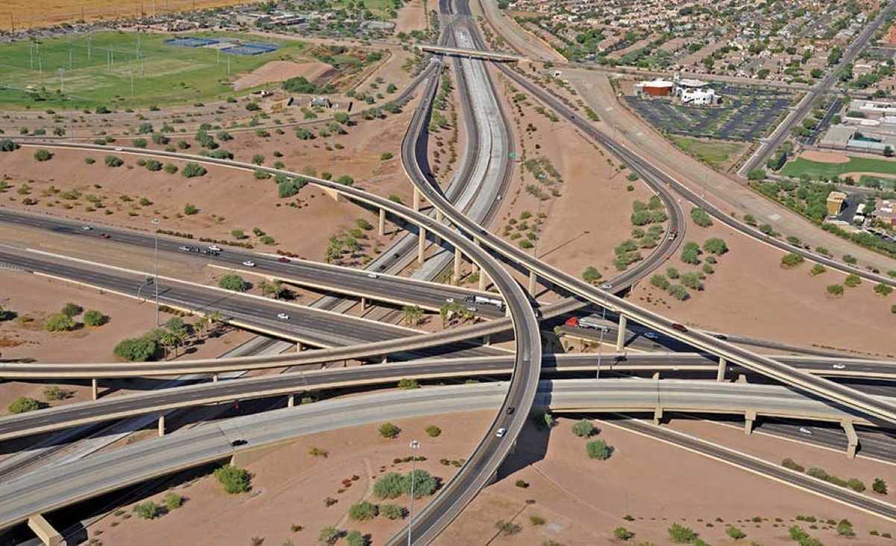
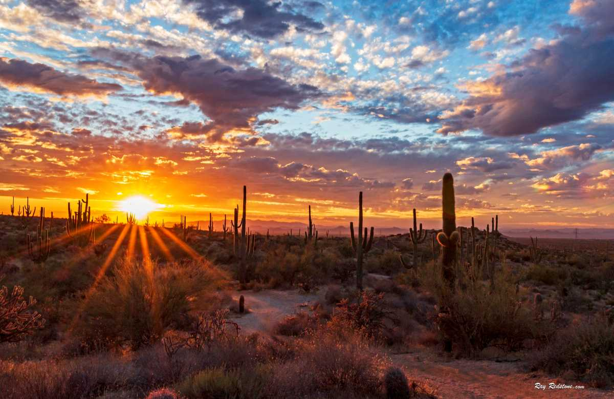

Scrapbook of Arizona
Prickly Pear Cactus
Superstition Mountains
Downtown Phoenix
Hot air balloons are all over Arizona!
The 101 is one of the many major highways in Glendale
You can always see a beautiful sunset in the desert
Information About Glendale, Arizona
Population: 248,797
Phoenix is the fifth largest city in the United States. Downtown Phoenix is just a few minutes away from the city of Glendale, and it has to much to offer.
Average Temperature: 78
Things to Do
South Mountain Park is the largest municipal parks in North America. There are more than 16,00 acres of land, and there are many trails for hiking and biking.
Museums
There are many museums for many interests in Glendale and the surrounding area. Some of them include: The Heard Museum, Desert Botanical Garden, Taliesin West, The Phoenix Art Museum, The Arizona Sciene Center, The Hall of Flame, Pueblo Grande Museum, and the Musical Instrument Museum are among some of the most popular.
Places to Eat
There are a variety of options when it comes to food in Glendale and greater Phoenix. Here are some of the most popular spots around the valley!
Breakfast/Brunch
Butters
Hash Kitchen
Snooze
First Watch
Lunch
Cafe Zupas
Pokitrition
Filiberto's
Dinner
Haldi Indian
Barros
Tom Finnegan's